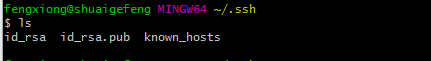
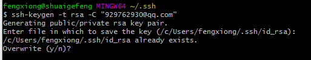

前言：电脑系统为 window 10 专业版，64位
相关步骤：
安装 Node.js 和配置好 Node.js 环境
打开 cmd 命令行，成功界面如下。

安装 Git 和配置好 Git 环境
安装成功的象征就是在电脑上任何位置鼠标右键能够出现如下两个选择。

注意：一般出于安全考虑，只有在 Git Bash Here 中才能进行 Git 的相关操作.如果需要在 cmd 命令行里调用 Git，那么就要配置电脑的环境变量 Path，或者在安装的时候选择 use Git from the Windows Command Prompt。这个可有可无，影响不大，成功配置的界面如图：

Github账户注册和新建项目
注意：项目必须要遵守格式：账户名.github.io，不然接下来会有很多麻烦.并且需要勾选 Initialize this repository with a README

在建好的项目右侧有个 settings 按钮，点击它，向下拉到 GitHub Pages
你会看到那边有个网址，访问它，你将会惊奇的发现该项目已经被部署到网络上，能够通过外网来访问它。

安装 Hexo
建立一个 blog 文件夹，然后通过命令行进入到该文件夹里面
输入 npm install hexo -g，开始安装 Hexo。

输入 hexo -v，检查 hexo 是否安装成功

输入 hexo init，初始化该文件夹(有点漫长的等待…)

输入 npm install，安装所需要的组件

输入 hexo g，首次体验 Hexo。

输入 hexo s，开启服务器，访问该网址，正式体验He xo

注意：假如页面一直无法跳转，那么可能端口被占用了。
此时我们 ctrl+c 停止服务器，接着输入”hexo server -p 端口号”来改变端口号

出现如下图就成功了

将 Hexo与Github page 联系起来
设置Git的 username 和 email (如果是第一次的话)

注意：这里要替换成自己的用户名，邮箱要替换成自己的邮箱
输入 cd ~/.ssh，检查是否由 .ssh 的文件夹

输入 ls，列出该文件下的内容.下图说明 .ssh 文件夹存在

配置自己的信息
输入 ssh-keygen -t rsa -C “你自己的邮箱”，连续三个回车，生成密钥.
最后得到了两个文件：id_rsa 和 id_rsa.pub (默认存储路径是：.ssh 文件夹下)

输入 eval”$(ssh-agent -s)”，添加密钥到 ssh-agent

再输入 ssh-add ~/.ssh/id_rsa，添加生成的 SSH key到 ssh-agent

登录 Github，点击头像下的 settings，添加 ssh

新建一个 new ssh key，将 id_rsa.pub 文件里的内容复制上去
输入 ssh -T git@github.com，测试添加 ssh 是否成功
如果看到 Hi 后面是你的用户名，就说明成功了。

配置 Deployment
在其文件夹中，找到_config.yml 文件，修改 repo 值(在末尾)

repository 值是你在 github 项目里的 ssh (右下角)

新建一篇博客
在cmd执行命令：hexo new post “博客名”
这时候在文件夹_posts目录下将会看到已经创建的文件

使用编辑器编好文章
使用命令：hexo d -g，生成以及部署了

部署成功后访问你的地址
那么将看到生成的文章
成功。
购买域名
只推荐上 GoDaddy 购买，安全，而且可以使用支付宝。
现在 GoDaddy 已经有中文版了，虽然国家显示是新加坡，但不影响使用。
查你想要的域名

查到适合的域名之后选择「添加到购物车」

GoDaddy 其他域名收费服务，不要管，继续「进入购物车」
后面的服务全部点击「不，谢谢」，免费的服务也不要用
确认购买
修改购买年限，默认是两年，可以修改成 1/2/3/5/10 年，随自己喜欢
现在 GoDaddy 上 .com 每年的默认费用是7元/年
但实际上，你看到我现在购买的是第1年：¥5.86/年
第 2 年后：¥101.00/年，GoDaddy 的域名价格时常有波动，以当时为准即可。
将独立域名与 GitHub Pages 的空间绑定
DNS设置
用DNSpod，快，免费，稳定。
注册 DNSpod，添加域名，如下图设置
其中 A 的两条记录指向的ip地址是 GitHub Pages 的提供的 ip
- 192.30.252.153
- 192.30.252.154
如博客不能登录，有可能是 GitHub 更改了空间服务的 ip 地址，记得及时到在 GitHub Pages 查看最新的 ip 即可
www 指定的记录是你在 GitHub 注册的仓库。
去 GoDaddy 修改 DNS 地址
更改 GoDaddy 的 Nameservers 为 DNSpod 的 NameServers
点击你的账户，管理我的域名
点击域名
将 GoDaddy 的 Nameservers 更改成 f1g1ns1.dnspod.net 和 f1g1ns2.dnspod.net

到此为止，最基本的也是最全面的 hexo+github 搭建博客完结。